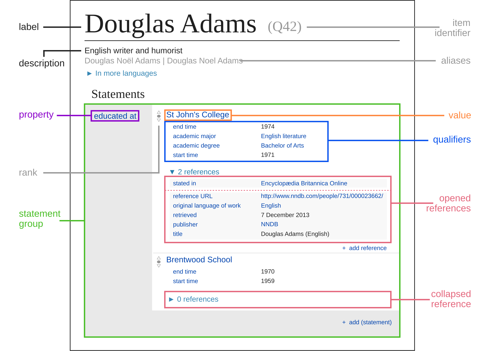
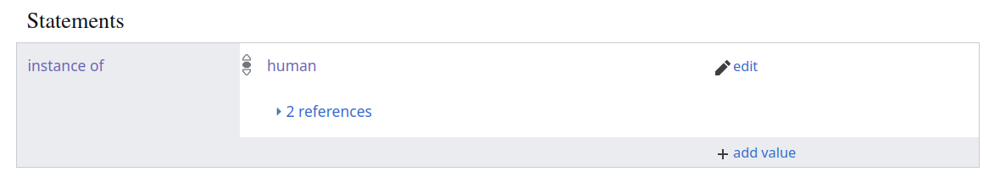

import pywikibot # load the whole library
# then we specifically import the page generator so we can iterate over all returned items
from pywikibot import pagegenerators as pg
# we query Wikidata directly, not the english language Wikipedia
wikidata_site = pywikibot.Site("wikidata", "wikidata")
# let's translate our query into SPARQL
QUERY = """
SELECT DISTINCT ?item
WHERE {
?item wdt:P31 wd:Q5; # Any instance of a human;
wdt:P106 wd:Q82955; # occupation politician;
wdt:P27 wd:Q114; # citizen of kenya;
}
LIMIT 5
"""Using Wikidata
Wikidata is a collaboratively maintained knowledge-base that is part of the larger Wikimedia universe and that includes more than 120,000,000 data entities. This data is also used to cross-link pages about the same subject across Wiki projects (like different language versions).
Main concepts
The knowledge-base of Wikidata consists of items that are further described by having properties which can have different values (these values in turn can be items too). Together properties and values make up statements about a given item
The Introduction to Wikidata uses this example to make it less abstract, using the British Science Fiction writer Douglas Adams as an example:

The highlighted statement (green) is about Adams’ education, shown as the educated_at property (violet) and gives two values for this, St John's College (demonstrated in orange) and Brentwood School. In this case, both of these values are Wikidata items themselves. But in other cases, this could also just be a simple value, e.g. a date for the birth date.
Each of those statements can also be further qualified and supported by references, depending on the property in question. Qualifications, like seen here, could be start/end dates, degrees, titles and more.
Wikidata can be queried using the SPARQL query language, which allows joining together required values for different properties to search for items.
Motivation
When we tried to find all Kenyan politicians, we used the Category:Kenyan politicians category of the English language Wikipedia as our starting point. But, this is not ideal as it will include false-positives, in the form of pages that are not actually articles that describe politicians, and false-negatives - that is actual pages from Kenyan politicians might be missing because they aren’t listed.
As an example for a false-positive when using the Category namespace: As there are many sub-categories for our category, we used recursion=True on the Category:Kenyan politicians, to make sure we get all the pages of politicians. But, our resulting list of pages surprisingly also includes the page about the Jomo Kenyatta International Airport!
Why? It’s because the page of the airport is part of the Category:Jomo Kenyatta, which in turn is part of Category:Presidents of Kenya, which in turn is part of Category:Political office-holders in Kenya, which - finally - is part of Category:Kenyan politicians.
Wikidata queries to find all pages of a type
By writing a more narrow query for Wikidata, we can avoid such false-positives – and also get a whole range of cross-links between the different Wiki projects, e.g. to find the English, and Swahili editions of the same article.
Writing a query
what properties and values could we use to find only Kenyan politicians?
- The articles should be about people, not airports. So we can filter to find items that describe humans only. If we search for this in Wikidata, we find that the corresponding property/value translates to
P31(instance of) and that humans are described by itemQ5. - Now, to find politicians, we can filter by finding items that additionally give the occupation
P106as politician (Q82955). - Lastly, we are looking for politicians that are from Kenya. One potential way to narrow it down to this could be filtering for the country of citizenship (
P27) to be Kenya (Q114).
If we look at the Wikidata item for Jomo Kenyatta, we find those properties showing up like this:



Querying using pywikibot
Let’s now translate this into creating a SPARQL query that the pywikibot can run for us.
First, we load the necessary library again, and then we write out the query using the SPARQL syntax:
We use SELECT DISTINCT to avoid returning duplicate items, and use ?item to get the whole Wikidata item returned for further processing.
In the WHERE clause, we add our three distinct property/value pairs that we all want to be present, and ultimately give a LIMIT of how many Wikidata items we’d like to get returned.
Once we got this query written, we can now turn this into a generator, that will allow us to make a loop over all returned elements.
We will alrady look at some of the data we get back:
generator = pg.WikidataSPARQLPageGenerator(QUERY, site=wikidata_site)
for item in generator:
print("item label (en): {}".format(
item.labels['en']
))
print("item description (en): {}".format(
item.descriptions['en']
))
print("sitelinks: {}".format(list(
item.sitelinks
)))
print("sitelink to enwiki: {}".format(
item.sitelinks["enwiki"]))
print("----------")item label (en): David Lelei
item description (en): Kenyan distance runner (1971-2010)
sitelinks: ['arzwiki', 'dewiki', 'enwiki', 'eswiki', 'frwiki', 'nlwiki', 'ptwiki']
sitelink to enwiki: [[David Lelei]]
----------
item label (en): Elijah Lagat
item description (en): Kenyan marathon runner and politician
sitelinks: ['dewiki', 'enwiki', 'eswiki', 'itwiki', 'nlwiki', 'swwiki']
sitelink to enwiki: [[Elijah Lagat]]
----------
item label (en): Newton Kulundu
item description (en): Kenyan politician (1948-2010)
sitelinks: ['dewiki', 'enwiki', 'ptwiki']
sitelink to enwiki: [[Newton Kulundu]]
----------
item label (en): Wesley Korir
item description (en): Kenyan marathon runner and politician
sitelinks: ['arwiki', 'arzwiki', 'commonswiki', 'dewiki', 'enwiki', 'fawiki', 'frwiki', 'mlwiki', 'nlwiki', 'nowiki', 'ptwiki', 'ruwiki']
sitelink to enwiki: [[Wesley Korir]]
----------
item label (en): Grace Emily Akinyi Ogot
item description (en): Kenyan politician and writer (1930-2015)
sitelinks: ['arwiki', 'arzwiki', 'dewiki', 'enwiki', 'enwikiquote', 'eowiki', 'fiwiki', 'frwiki', 'hawiki', 'hewiki', 'hywikisource', 'igwiki', 'igwikiquote', 'itwiki', 'lawiki', 'ptwiki', 'rowiki', 'sowiki', 'swwiki', 'tawiki', 'ukwiki', 'urwiki']
sitelink to enwiki: [[Grace Ogot]]
----------For many items, the labels and descriptions will be available in multiple languages. Here, we printed only the English one.
And as you see in the sitelinks, Wikidata also returns the cross-links to other Wiki projects, like the English (enwiki) and Swahili (swwiki) language editions of Wikipedia. This allows us now to switch to Wikipedia and read the articles as before: